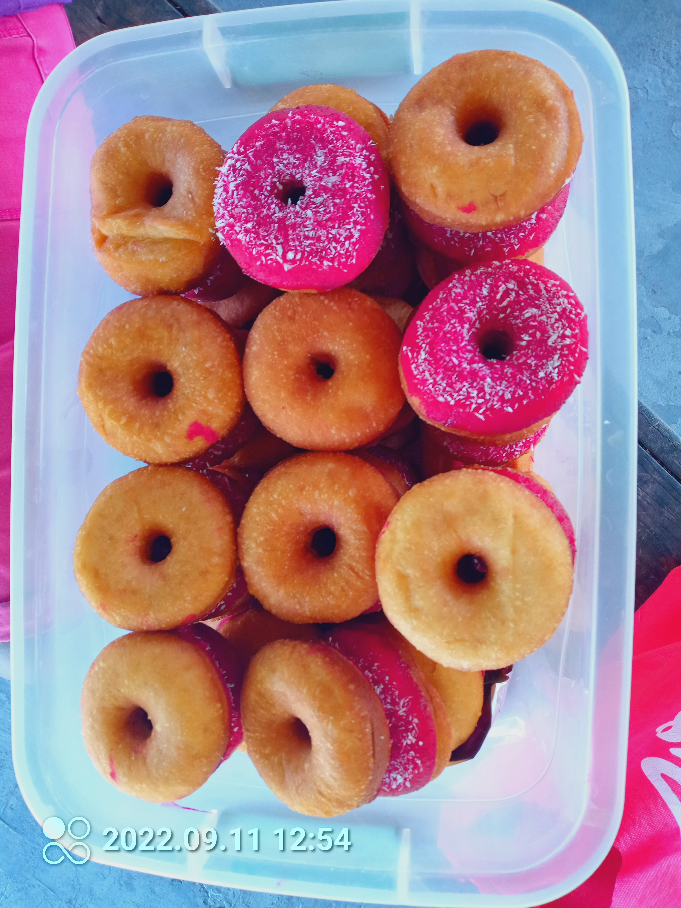

LOCAL WHITE DOUGH-NUT

INGREDIENTS
-
2kg white plain flour
- 700mL cooking oil
- 250grm yeast
- 500gram white sugar
- 1.5L warm water
- 1pkt icing sugar
- 1pkt dessicated cocunut
- Food coloring(any color prefered)
STEPS
-
Pour some warm water into flour
- Add 150 gram yeast
- Add 100 gram of sugar
- Pour half cup oil
- Thoroughly mix and allow dough to rise
- Prepare pan and pour 650mL of oil inside
- Put pan on the fire
- Deep fry the donuts
- Apply donut toppings from mixed icing, dessicated coconut & food coloring